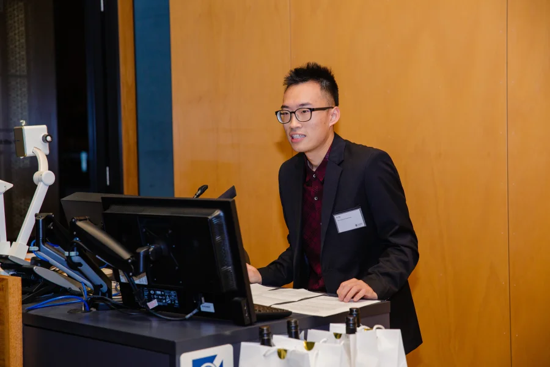

New music demo / 新作品 Demo
Snow White / 白雪公主
银子演唱、作曲并制作的中文电影感流行 Demo。这里收录试听、歌词、曲谱、制作名单和写歌故事。

我做过许多看似不相关的事情。
但它们在我这里，指向同一个问题：
如何在复杂系统中做出高质量决策。
I work across seemingly unrelated fields.
In my case, they converge on one question:
how to make high-quality decisions in complex systems.
New music demo / 新作品 Demo
银子演唱、作曲并制作的中文电影感流行 Demo。这里收录试听、歌词、曲谱、制作名单和写歌故事。
简历
系统化交易员、量化研究员与创业者背景；现于 Berklee 深造 Music Production and Engineering 与 Jazz Composition，GPA 4.0。
查看完整简历